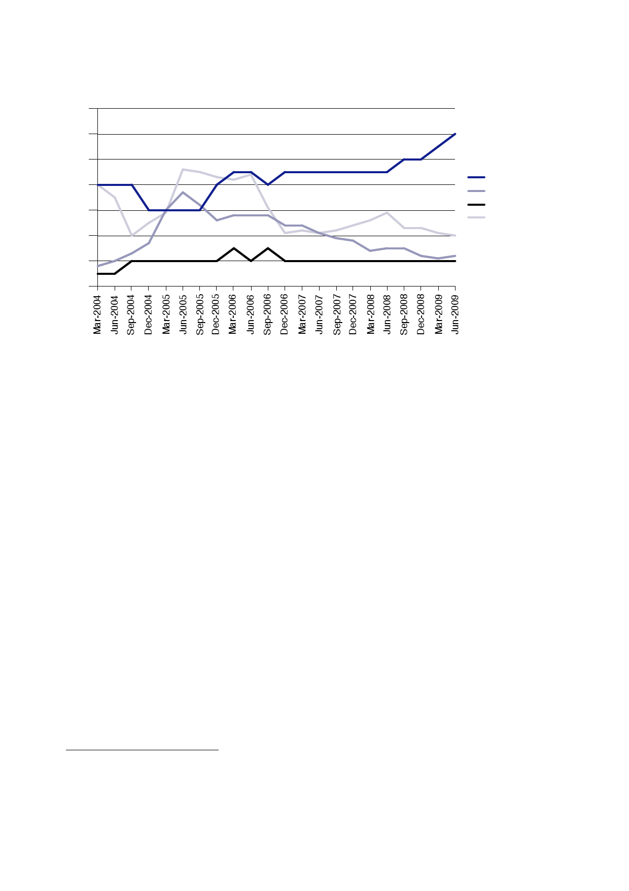

15.1 | Civilian
personnel
70
60
50
FCO to
Baghdad
40
DFID to
Baghdad
30
FCO to
Basra
DFID to
Basra
20
10
0
899.
There is no
continuous set of data for civilians deployed by other departments
or
organisations
during the post‑CPA period.
900.
In November
2004, Mr Straw sent details of all staff present at the
British Embassy
Baghdad and
the British Embassy Offices Basra and Kirkuk on 24 October 2004 to
the
House of
Commons Foreign Affairs Committee.589
901.
The list of
staff, reproduced in full below, includes those deployed by the
FCO,
the MOD,
DFID and other government departments and organisations. It is the
most
comprehensive
record seen by the Inquiry of post‑CPA civilian staff
numbers.590
589
Select
Committee on Foreign Affairs Minutes of Evidence, 24 March
2005, Letter to
the Chairman of the
Committee from
the Secretary of State for Foreign and Commonwealth Affairs, 2
November 2004.
590
The staff
list records officials visiting the Embassy and the Embassy Offices
on a single day in October
2004. It
does not include those on leave.
399